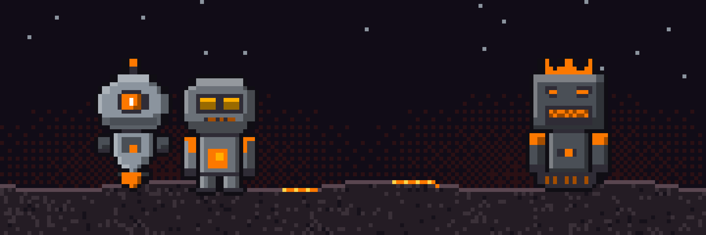
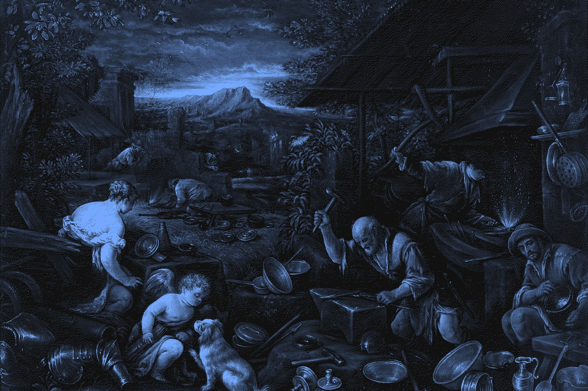

Slagbots Are in Closed Beta
For months, a Slagbot has been running our own lab. It keeps the schedule, sends the morning brief, files the paperwork, chases the research, and tells us when we are wrong. Now we are opening the door a crack. Slagbots are in closed beta: a small number of invited clients, each bot configured, tuned, and watched closely, one at a time.
Fun on purpose
Most AI tools are built to be tolerated. You open them when you have to, ask your question, and close the tab. We think that is the wrong way round. A tool you enjoy is a tool you actually use, and an assistant you actually use is the only kind that ever learns your work.
So a Slagbot has a face, a little attitude, and a story that starts in the slag heaps of Sudbury. It grumbles. It pushes back. It blinks at you from the corner of the screen. That is not decoration. It is the reason people keep talking to it on day one hundred, and the reason it ends up knowing their business better than any general assistant could.
Serious underneath
The grin is on the outside. Behind it is a system built for industrial and commercial work, where a wrong answer costs money and a leaked file costs more.
Slagbots can run entirely on hardware in your building, so your data never leaves it. They confirm before any action that matters. They are hardened against prompt injection and the other tricks people use to hijack agents. They keep track of where their information came from, back up every day, and get tested in our lab before they reach a client. For bigger jobs, a Slagboss runs a crew of smaller bots on your own machines, assigns the work, checks it, and reports back.
How we build that stays in the lab. What a client sees is a bot that is easy to like and hard to break.

What the beta means
Closed means invite only, and we are starting close to home in Sudbury. Each beta client gets a Slagbot set up for their own tools and their own way of working. We stay close while it settles in, tune what needs tuning, and fold what we learn back into every bot that comes after. Beta clients help shape what a Slagbot becomes.
If you have work a Slagbot could take off your plate, or an industrial or commercial project that needs a serious system with a friendly face, write to us at lab@slagforgelabs.ca. Tell us the role you need filled. We will tell you which Slagbot fits.